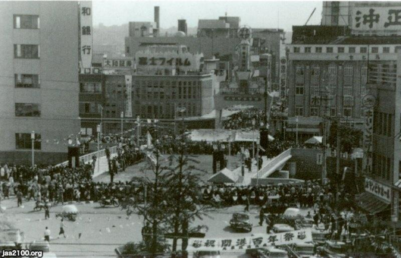
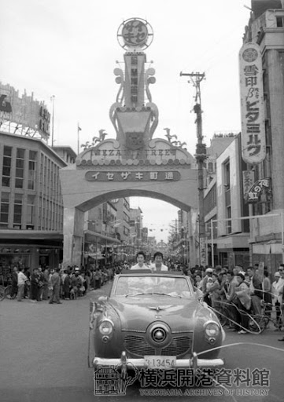
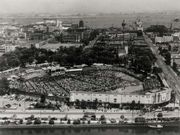

<html lang="jp"></html>
<head>
    <title>💖✨インタビュー✨💖</title>
    <link rel="stylesheet" href="./css/style.css">
</head>
<body>
    <h1 style="text-align: center;">💖✨インタビュー✨💖</h1>
    <br>
    <br>
    <style>
        div{text-align: center;}
    </style>
 <div>
    <h2 style="text-align: center;">「わたしのみた昭和の横浜 ー横浜での進学、就職、結婚、育児ー」</h2>
    <br>
    <br>
    <br>
    まず、1950（昭和25年）〜1989（昭和64年）の出来事を調べてみました<br>
    下にある画像はその期間にあった出来事の年略表をスクショしたものです<br>
    詳しくは、<a href="https://www.city.yokohama.lg.jp/city-info/yokohamashi/gaiyo/ayumi/chronological-table.html" target="_blank">横浜市のあゆみ　年略表</a>に載っています🎀<br>
 </div>
 <br>
 ୨ෆ୧┈┈┈┈┈┈┈┈┈┈┈┈┈┈┈┈┈┈┈┈┈┈┈┈┈┈┈┈┈┈┈┈┈┈┈┈┈┈┈┈┈┈┈┈┈┈┈┈┈┈┈┈┈┈┈┈┈┈┈┈┈┈┈┈┈┈┈┈┈┈┈┈┈┈┈┈┈┈┈┈୨ෆ୧
 
 
 
 
 
 <br>
 ୨ෆ୧┈┈┈┈┈┈┈┈┈┈┈┈┈┈┈┈┈┈┈┈┈┈┈┈┈┈┈┈┈┈┈┈┈┈┈┈┈┈┈┈┈┈┈┈┈┈┈┈┈┈┈┈┈┈┈┈┈┈┈┈┈┈┈┈┈┈┈┈┈┈┈┈┈┈┈┈┈┈┈┈୨ෆ୧<br>
 <br>
 <style>
    div{text-align: center;}
 </style>
 <div>
    この中から気になったをトピックをピックアップして質問を考えてみました<br>
    <br>
    <br>
    ⇩⇩⇩⇩⇩⇩⇩<br>
    <br>
    ①横浜開港100年祭(1958)<br>
    ②市の人口200万人突破(1968)<br>
    ③市電、トロリーバスの廃止(1972)<br>
    ④大通り公園、横浜スタジアム完成(1978)<br>
    ⑤昭和から平成元年の出来事<br>
    <br>
    <br>
    <br>
    <h2 style="text-align: center;">💖✨質問✨💖</h2>
    <br>
 </div>
 <h4>①横浜開港100年祭</h4>
 　　　イベントの雰囲気は今と比べて違うところ、また変わっていない（継承されている）と思うところは？<br>
 　　　（例　仮装、外国人、観光客、内容、盛り上がり方、歌など）<br>
 <br>
 　　　　
 <br>
 <br>
 <h4>②市の人口200万人突破</h4>
 　　　200万人を突破して全国第３位になった横浜の街並みはどんな感じだった？<br>
 　　　（例　当時の流行り、当時あって現在にないものなど）<br>
 <br>
 <br>
 <h4>③市電、トロリーバスの廃止</h4>
 　　　廃止の知らせを聞いてどう思った？<br>
 　　　（例　トロリーバスの良かったところ、利用目的など）<br>
 <br>
 <br>
 <h4>④大通り公園、横浜スタジアム完成</h4>
 　　　公園やスタジアムが完成する前と後の横浜の雰囲気の違いはどんなところ？<br>
 　　　（例　人々の様子、観光客、思い出のイベントなど）<br>
 <br>
 <br>
 <h4>⑤昭和から平成元年の出来事</h4>
 　　　市政100周年・開港130周年記念式典、横浜博覧会、横浜ベイブリッジなどイベントが多かったり、昭和から平成に変わった年の横浜で特に記憶に残っている出来事は？<br>
 　　　（＋α 昭和、平成、令和という時代を生きてきて横浜はどの面で過ごしやすいと感じているか。進学、就職、結婚、育児などの生活）<br>
 

